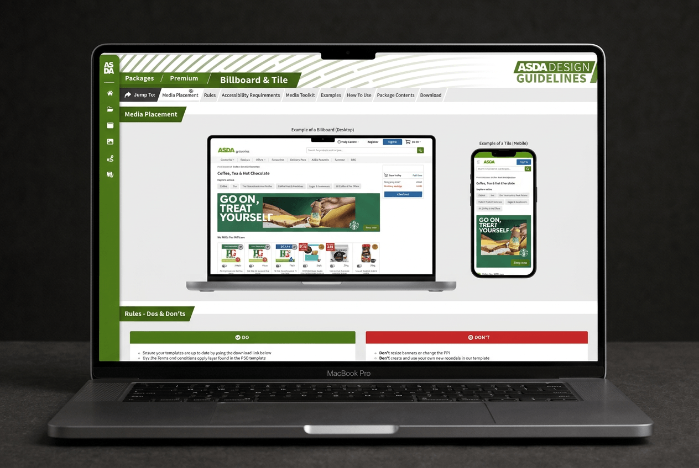
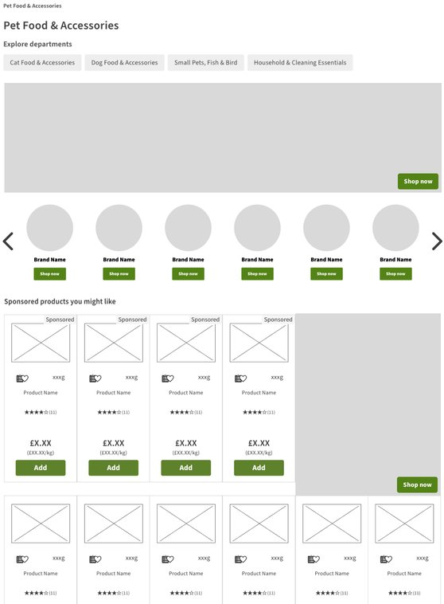
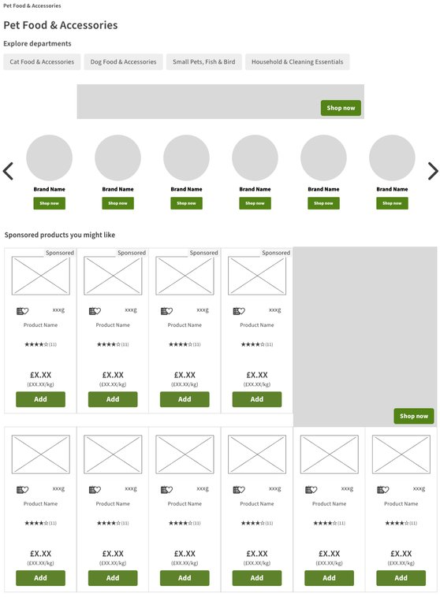
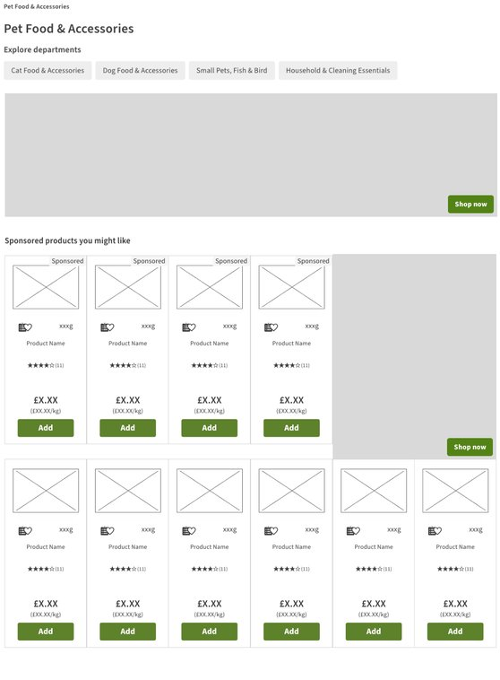
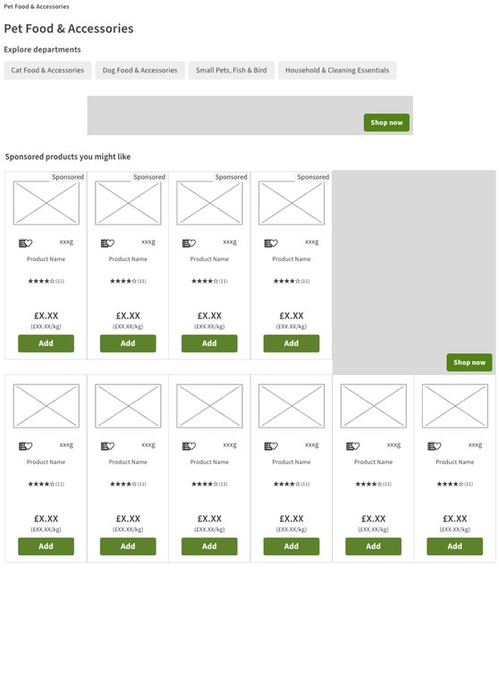

Re:Finery: value-based price bands can still feel instant.
Elsie May: a simple line of reassurance can make choosing feel less daunting.
What the order data showed
Box size always follows dress style, so it can be set for you. 65% of dress orders add a box.
Elsie May · Step 1: choose the closest gown style
01 · Treasured Possession
Low-fidelity designs
Planned in Figma, then built as a live prototype we could test early.
Price first, booking second: the price shows before any dates.
Smart defaults from the order data, with box size matched to dress style.
Checked with our developer, so every idea worked in WooCommerce.
Where AI helped
I planned the flow in Figma, then used Claude to build a live prototype much faster.
Mobile wireframes, from the first question to the basket
01 · Treasured Possession
Testing
Colleagues outside the project tested the prototype using real-world scenarios.
Testing the prototype on desktop
FindingDesign change
"Edit quote" was easy to miss→Made it a prominent button
Users were unsure which dress style to choose→Added a "Not sure?" panel and "from" prices
Dates were unclear→Introduced a colour-coded calendar
Users wanted to see all extras→Displayed every available item
Desktop users relied on the total bar→Added a "Continue" button at every step
01 · Treasured Possession
Client review
I presented the findings to the client, and we agreed the changes together.
Price before email
The client preferred capturing emails before showing prices. Competitor research and usability findings supported showing the price first. With too little order data for an A/B test, we agreed to launch price first and keep email first as a test option.
Clearer service pricing
Renamed "Own box" to "Pack and present with your own box", clarifying what the £30 charge covered.
Room for every item
The client saw few orders for groomsman suits or flower girl dresses. I suggested building for them anyway, as room to grow.
Follow-up for saved quotes
Planned a 10% discount after seven days, plus a reminder before the 30-day price hold expires.
01 · Treasured Possession
High-fidelity designs
Mobile first, on the client's brand, accessible to WCAG 2.2 AA.
~80% of visitors on mobileSticky running totalBrand plum and blush44px touch targets
01 · Treasured Possession
Results
Too early for results, so I've set up how we'll measure them.
The baseline
12 months of orders: £251 average order, about 23 paid orders a month, 12% failed or cancelled.
What we'll measure
Quote visitors who order · contactable leads captured · orders recovered by follow-up emails.
When
Eight weeks after launch, compared with the same period last year, for wedding season.
Opportunities next
Seasonal and engraved boxes · preservation as a gift · suit preservation as its own service
02 · Asda Design Guidelines · Design system · B2B
Asda Design Guidelines: Supplier Design Hub
An interactive B2B hub giving suppliers easy access to design specifications, downloadable PSD templates and accessibility guidelines.
What this shows
Design systemAccessibility guidanceWorking with a product ownerImproving after launch
02 · Asda Design Guidelines
The Problem
PDF guidelines meant rejected banners and the same supplier questions, again and again.
Outdated format: locked in PDFs, built around internal processes.
Frequent errors: suppliers often sent non-compliant artwork.
Repeated questions: account managers answered the same queries.
Limited self-service: suppliers needed clearer guidance to get it right.
A typical year
3,000campaigns a year
19,000media assets
900+assets in a single week before Christmas
02 · Asda Design Guidelines
Phase 1: From PDFs to an interactive hub
I replaced static PDFs with a bespoke hub, built around how suppliers browse and use the guidelines.
A page for every format
Examples shown in context on Asda.com, across desktop and mobile.
Templates and UI toolkit
Downloadable PSD templates and a Photoshop UI toolkit I designed, so suppliers could create compliant artwork.
Built for ongoing updates
A resource that could evolve with new formats, design system changes and templates, unlike static PDFs.
02 · Asda Design Guidelines
Phase 2: self-service
Suppliers moved to self-service, so the hub had to work without anyone checking.
Final artwork, not PSDs
Suppliers now sent finished JPEGs, so the guidance had to be crystal clear.
Rebuilt in the new CMS
With the product owner: the structure suppliers knew, rebuilt from standard components.
The trade-off
Less bespoke layout, for pages the team could maintain without me.

02 · Asda Design Guidelines
Testing
Five suppliers, one task: find the specs, check accessibility, download the template.
FindingDesign change
Lost track of which package→Breadcrumbs
In-page links weren't obvious→A "Jump to" label
No way into the PSD toolkit→A video tutorial
No sense of progress→A progress bar
Couldn't see artwork on site→The Artwork Checker
02 · Asda Design Guidelines
The Artwork Checker
The finding everyone had missed: suppliers couldn't see how artwork would look on site.
Dynamic banner sizing: shows artwork at the size it really appears, not the size supplied.
Safe zones: overlays where Asda's roundels and UI sit, so nothing important is covered.
Interactive preview: detects the banner size, suggests placements, and toggles on-site elements.
02 · Asda Design Guidelines
Results
Fewer rejections, fewer questions, and a tool Asda kept using.
95→98%media implementation rate
~50%fewer supplier questions to the account team
1,000+banners checked at peak through the Checker
Part of Asda's approval process
The Artwork Checker became a standard step, used to check artwork before any banner went live.
03 · LHA London · Browse
LHA London: Room Search and Enquiries
A room search experience with filters and availability-led listings, helping applicants find suitable rooms before enquiring.
What this shows
Discovery and evaluationCompetitor benchmarkingMeasuring impact
03 · LHA London
The Problem
LHA wanted applicants to check room availability before enquiring, reducing unsuitable enquiries.
The problem
Poor room visibility: no photos, filters or availability.
Manual vetting: every applicant needed approval.
What I designed
Smarter search: photos, prices and live availability.
Alternative options: waiting lists and similar available rooms.
Before: one generic enquiry form
03 · LHA London
Mapping the Journey
Every way in, including paid ads, leads to the right room and the right form.
Many entry points: homepage search, listings, and paid ads to room pages.
Room status decides: available rooms go to booking, full rooms to a waiting list.
Pre-filled forms: the room, hostel and type carry through, ready to action.
03 · LHA London
Wireframes
Low-fidelity wireframes to get the room card right before any visual design.
Room card first: photo, price, room type and a live availability badge.
Search to listings: filters already applied from the homepage search.
Reviewed with the client before moving into the final design.
03 · LHA London
Results
Better enquiries, not more of them.
1 in 5visitors now use the room search24,173 of 120,371 users
Before
After
5×longer engagement than the old form13s → 1m 08s average per user
83%fewer visits to the generic enquiry form24,161 → 4,156 users, year on year
70rooms across 14 hostels, managed in-housePrices and availability updated by the team
After launch
The LHA team updates prices and availability themselves, without a developer.
We've already seen more confident user engagement and higher-quality enquiries.
Aggie Leighton, Operations Support Manager, LHA London
04 · Asda Experiential Hubs · Seasonal launches
Asda Experiential Hubs: Seasonal Brand Hubs
A repeatable seasonal experience driving customer engagement while giving brands a lower-cost alternative to a Branded Zone.
What this shows
Seasonal launchesCustomer and commercial goalsPilotingApp journeys
04 · Asda Experiential Hubs
The Problem and Opportunity
Brands with smaller budgets had nothing to buy, and Asda was missing revenue.
The Campaigns Team
Ran all funded media on Asda.com: around 3,000 supplier campaigns a year.
What Branded Zones were
Bespoke brand pages that suppliers paid for, which my team designed and built.
The gap
Effective but expensive. Sales kept hearing brands wanted a page but didn't have the budget.
A Branded Zone: LEGO at Christmas.
04 · Asda Experiential Hubs
The Idea
One shared hub, several brands buying in, owned by Asda and tied to seasonal events.
Worth a visit: an instant-win competition, brand shops and playful carousels.
Little asked of suppliers: products, logos and banners. We built the rest.
Mapped and wireframed first, then shared early to get stakeholders invested.
04 · Asda Experiential Hubs
Mapping the Journey
The hub had to add to the shopping journey, not get in its way.
Every way in: event pages, sponsored media and the Rewards app.
Different intentions: browsing products or entering the competition.
Back to shopping: every route leads to products and the trolley.
04 · Asda Experiential Hubs
The Pilot
The King's Coronation: The Big Get-Together Bus Tour proved the format.
Designed and built it, from wireframes to front end.
"Find the Winning Window", built with third-party agencies.
No win? You saw the products in your window, so every play led back to shopping.
Strong uptake from suppliers, and stakeholders behind the format.
04 · Asda Experiential Hubs
Making It Repeatable
From one page to a template for every season.
A tested template: each event started from a proven structure, not a blank page.
Same structure, new competition each event.
Prizes moved to Asda Rewards Cashpot, tying the hubs to the app.
The Big Get-Together · King's Coronation
04 · Asda Experiential Hubs
Results
A regular product across Asda's biggest events, and a new revenue stream.
910k+Big Night In entries, 26 suppliers
1.1m+Lunar New Year entries, 25% more
~1mclicks from the Rewards app
05 · Asda Pets · Browse
Asda Pets: Category Hub
A category hub prioritising product discovery while integrating supplier-funded brand content.
What this shows
DiscoveryStakeholder alignmentOptions and trade-offs
05 · Asda Pets
The Problem
A permanent brand takeover disrupted product discovery.
Fixed placement: a branded skin covered the entire category.
Inconsistent experience: it didn't match the rest of Asda.com.
No clear framework: we needed a better way to manage future takeovers.
Shoppers
Needed to find pet products quickly.
Merchandising
Needed control over categories and product ranges.
Brands
Needed clear, consistent paid placements.
05 · Asda Pets
Mapping the Journey
Integrating funded placements into the shopping journey, rather than putting them in the way.
From a banner on the Pet Food category page, through the hub, to a category or a brand page. Pink dashed routes are funded.
05 · Asda Pets
Three Options
From a minimal approach to more supplier-focused, with merchandising in control.
Minimal supplier contentMore supplier content
Option 1
Sponsored slots on the existing category page.
Agreed option
A hub with category buttons, straight to what shoppers need.
Option 3
No category buttons, more funded content, built around Top Picks.
05 · Asda Pets
Sponsored Opportunities
I wireframed every possibility the site, and the new CMS, could support.

1 · Billboard, brand pods, promo, inserts

2 · Leaderboard, brand pods, promo, inserts

3 · Billboard, promo, inserts

4 · Leaderboard, promo, inserts
05 · Asda Pets
Agreeing the Balance
With senior merchandising, we agreed navigation first and funded slots below.
Merchandising insight
What performed better on their pages.
Supplier involvement
How much funded content the hub could carry.
User first
Nothing should get in the way of finding products.
Agreed: the hub with navigation buttons, funded slots below.
05 · Asda Pets
Anatomy of the Hub
Navigation first, with funded placements as clear, sellable slots.
Asda Pets header in Asda's own style, replacing the skin.
Category links that jump straight to each section.
Billboard: a sponsored hero carousel.
Brand icons linking to each brand's page.
Product spotlight per category, with sponsored products.
Promo banners: up to four per category.
06 · Website Design · Visual design
Website Design: Websites and Branded Zones
Websites designed and built from scratch, and bespoke brand pages for Asda's biggest suppliers.
What this shows
Visual designDesign systemsFront-end build
Alpha Hospital Group
06 · Website Design
Branded Zones
Bespoke brand pages for Asda's biggest suppliers, balancing their campaign with Asda's look.
£100Kinvestment secured from Cadbury
2 → 5designers trained as the team grew
2 daysto deliver a fast-track Branded Zone
LEGO · Christmas
Thank you
Questions?
nickthompsondesign.co.uk
NickThompsonDesign
Key points
All slides · about 20 minutes
Click a slide to jump to it. Press G or Esc to close. Orange marks slides with something still to add.